OSRS Max Time-Wasting Plan
OSRS Max Time-Wasting Plan
Gathering
Sailing
62 for 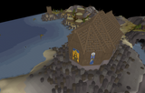 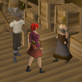
Your Level
50of 62
XP 101,825To 62 231,979
Target62 → 99
Options9
Your Pick
Open Decision
No Method Locked In
The plan sets a target here but does not name a method. Pick one with the circle at the end of any row below.
Methods
At 50 Sailing, the best option open to you is Barracuda Trials (80–200k/hr). Locked rows need a higher level.
| Image | Method | Requirement | XP/hr | Notes | Choose |
|---|---|---|---|---|---|
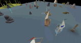 | Barracuda Trialsbest at your level | 30 / 55 / 72 | 80–200k | The fastest Sailing from 30 onwards. Tempor Tantrum at 30, Jubbly Jive at 55, 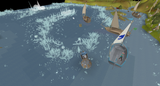 Gwenith Glide at 72; each has Swordfish/Shark/Marlin ranks with tighter timers. Gwenith Glide at Marlin rank reaches 200k+ with a rosewood hull and a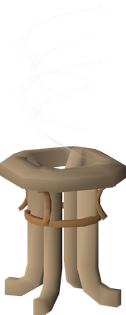 crystal extractor running. | |
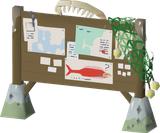 | Courier tasks | 1 (46+ useful) | 30–145k | Cargo runs between ports. Summer Shore 46–55 gives ~30k, Rellekka 62–70 gives 55–90k, 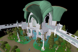 Prifddinas 70–72 gives 65–70k, and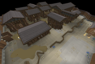 Lunar Isle round trips from 76 give 120–145k once you can hold five tasks at 84. Far less intense than trials. | |
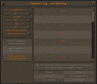 | Sea charting | 1 | ~10k | The starting method and the best XP before 30. One-off task rewards tracked in the 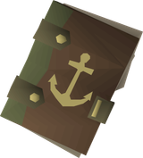 captain's log, with bonuses for clearing a region. Charting everything needs 78 Sailing and unlocks horizon's lure, a permanent 2.5% Sailing XP boost. | |
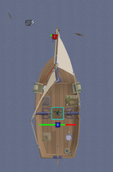 | Bounty tasks | 30 | middle | Kill an assigned sea monster for its bounty drop, structured like Hunter Rumours. Sits between salvaging and trials for rate, pays well, and at 80+ every task is available. Use 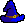 Magic or | |
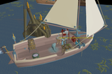 | Shipwreck salvaging | 15 (42 better) | 8–40k | The AFK option. Two salvaging hooks, a salvaging station and crewmates on a sloop; a crewmate on your hook makes it nearly idle at roughly 8k/hr. Tick manipulation roughly doubles it if you want to work for it. | |
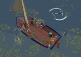 | Deep sea trawling | Fishing hybrid | moderate | Trawling nets over fish shoals. Trains Sailing while producing raw deep-sea fish, so it doubles up with your 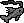 Fishing goal. | |
| Crystal extractorneeds 73 Sailing | 73 (+ 67 Con) | +10–15k | Not a method, a passive top-up. 250 XP per harvest roughly every 63 seconds, stacking on top of whatever else you are doing. Build it as soon as you hit 73. | ||
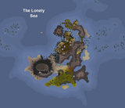 | Wyrmscraigneeds 62 Sailing | 62 | 12.5k quest XP | Sail to the island after Pandemonium with 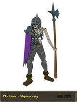 Mortimer during the quest, then the repeatable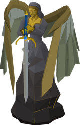 Mad Angel and Golem | |
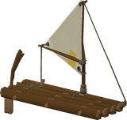 | Ocean encounters | 1 | passive | Glows, strong winds and castaways while sailing. No requirement; trim your sails every time for the free XP. |
Notes
- Pandemonium is mandatory before any training, and several quests give Sailing XP. Chart the seas to about 30, then switch to Barracuda Trials.
- The plan puts Sailing in the slow block, which fits: it is the newest skill and its rates are still being balanced. Re-check the wiki guide before the long grind.
- Two permanent multipliers are worth detouring for: horizon's lure from full charting (78 Sailing, 2.5% bonus to everything) and the crystal extractor at 73 Sailing plus
67. Construction
Construction - Boat speed is XP rate. A rosewood hull at 93 Sailing and 84 Construction is about 20% faster, which is roughly 15% more XP per hour on trials.
- If you want the least attention-heavy route, salvaging with crewmates and courier runs get there without any tick manipulation, but more slowly.
- Deep sea trawling overlaps with Fishing, so it is the natural pick on days you want both skills moving.
- The Sailing Skillcape now includes Teleport to Boat, provided the boat has a Greater Teleport Focus.